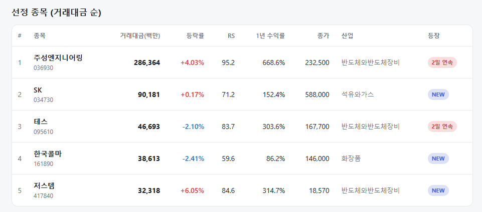
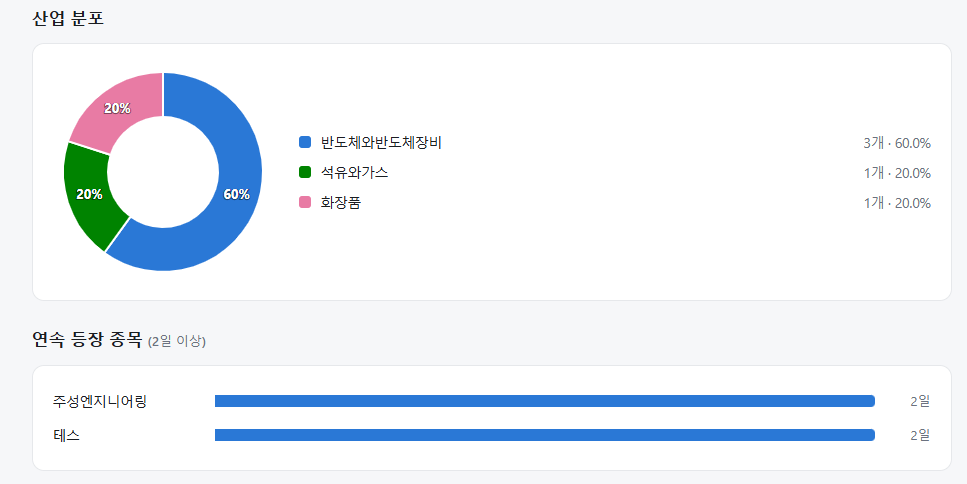
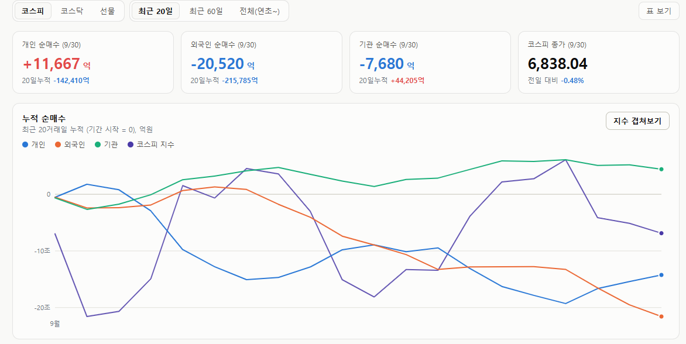

매일의 주도주 정리를 위해 기록합니다.
연속적으로 나온 종목들 또는 상승 후 조정받는 종목 위주로 리서치 해보시면 좋을 것 같습니다.


*오늘의 퀀트픽은 '저스템' 입니다.
▶ 2분기 영업이익 93억(+346%) — 컨센서스 43% 상회: 매출 293억(+159%), 영업이익률 31.6%로 분기 최대 이익과 최고 이익률
▶ "증설보다 수율" — 메모리 3사 수율 투자의 직접 수혜: 기존 라인 수율을 끌어올리는 습도제어 장비가 단기 대응 수단으로 부각
▶ 2027년 영업이익 460~500억 전망, 그런데 P/E는 7배: 2세대 장비(JFS) 전환과 HBM용 하이브리드 본더 개발이 다음 성장축
#주도섹터
에너지장비, 무역·상사 및 인프라
주요 종목: LX인터내셔널, HD현대에너지솔루션, 두산에너빌리티(+2.38%), 삼성중공업(+1.91%), 에코프로(+2.28%).
분석: 무역회사와판매 업종이 +3.85%, 에너지장비및서비스 업종이 +2.80%, 화학 업종이 +1.99% 상승했습니다. 상사주 및 신재생에너지 관련주로 수급이 유입되었으며, 두산에너빌리티와 삼성중공업 등 견고한 수주 잔고를 보유한 조선·원전 인프라주가 상승 방어에 성공했습니다. 에코프로 등 2차전지 대표주 역시 코스닥 반등을 뒷받침했습니다.
반도체 공정·검사 장비
주요 종목: 주성엔지니어링(+4.03%), 저스템(+6.05%)
분석: 삼성전자(-1.47%)와 삼성전자우(-4.31%) 등 메가 캡의 차익 매물 속에서도 SK하이닉스가 상승 방어했습니다. 주성엔지니어링(2일 연속, RS 95.2, 거래대금 2,864억 원)과 저스템(RS 84.6) 등 증착 및 클린룸 핵심 소부장 종목으로 강력한 알파 자금이 쏠리며 차별화된 상승세를 나타냈습니다.
#조정섹터
금융(은행·보험) 및 가정용품
주요 종목: 케이뱅크, 롯데손해보험, 미래에셋생명, 모나미, 전진바이오팜, 미래에셋증권(-0.64%).
분석: 문구류(-3.75%), 은행(-3.40%), 손해보험(-3.30%), 생명보험(-3.24%), 가정용품(-3.04%) 업종이 일제히 하락했습니다. 그간 지수 방어 역할을 수행하던 금융 섹터에서 기관 중심의 이익 실현 매물이 집중되며 업종 하락 최상단을 장악했습니다.
#수급동향

코스피 지수는 -0.48% 하락한 6,838.04로 마감했습니다. 반면 코스닥 지수는 +0.72% 상승한 855.91을 기록하며 대형 IT가 주춤한 사이 중소형 성장주 중심의 키 맞추기 장세가 전개되었습니다.
유가증권시장에서 외국인 투자자가 2조 520억 원(20일 누적 -21조 5,785억 원), 기관 투자자가 7,680억 원(20일 누적 +4조 4,205억 원)을 동반 순매도하며 지수 상단을 강하게 압박했습니다. 개인 투자자는 1조 1,667억 원을 순매수했습니다. 외인·기관 합산 순매도(-2조 8,200억 원) 중 개인 매수분을 제외한 약 1조 6,533억 원의 수급 공백은 기타법인의 대규모 자사주 매입으로 매도물량을 소화했습니다.
앤트로픽의 장부가 열렸다: 한국 AI 투자자가 봐야 할 것은
앤트로픽의 IPO 서류가 로이터를 통해 공개됐습니다. 261쪽 중 80쪽이 위험 요인이고 사업 계획은 48쪽입니다. 2조 달러 이상의 기업가치를 노리는 회사가 스스로 적어낸 숫자들은 AI 투자를 보는 방식을 한 단계 더 밀어붙입니다. "AI 사용량이 늘어난다"는 사실에서 한 걸음 나아가, 누가 비용을 감당하고 어느 기업에 이익이 남는지를 봐야 하는 단계입니다.
① 420억 달러 손실의 실체
2025년 매출은 약 46억 달러로 12배 늘었고, 영업손실은 80억 6천만 달러, 순손실은 약 420억 달러입니다. 여기서 오독을 피해야 합니다. 순손실 중 약 340억 달러는 회계상 비용입니다. 나중에 주식으로 바뀔 금융상품의 평가액이 회사 가치와 함께 오른 걸 비용으로 잡은 것이지, 돈이 나간 게 아닙니다. 실제 현금 소진은 영업손실 80억 달러이고, 그 원인은 컴퓨팅 비용 73억 3천만 달러(전년의 3배, 영업비용의 절반 이상)입니다.
최근 2026년 2분기 매출은 115억 달러로 2025년 연간의 2배를 넘겼고, 7월 연환산 매출은 650억 달러입니다. 성장은 의심할 여지가 없습니다. 문제는 성장이 아닙니다.
② 비용은 잠겨 있고, 매출은 잠겨 있지 않다
서류가 보여주는 가장 중요한 구조입니다.
비용 쪽 —향후 10년간 6개 파트너와 최소 5,180억 달러의 인프라 지출을 약정했습니다. 구글 1,111억, 아마존 1,100억, 마이크로소프트 314억. 대부분 취소할 수 없습니다. 서류에 "실제 지출이 약정에 못 미치면 구글에 차액을 지불해야 한다"고 적혀 있고, 아마존도 같습니다. 스페이스X 계약(월 12억 5천만 달러, 최대 845억 달러)만 90일 전 통지로 취소가 가능합니다.
매출 쪽 — 매출의 4분의 1이 단 두 고객에게서 나왔고, 서류는 "대형 고객 다수가 장기 계약에 묶여 있지 않아 지출을 줄이거나 중단할 수 있다"고 경고합니다.
즉 나가는 돈은 10년 약정으로 고정됐는데, 들어오는 돈은 고객이 언제든 끊을 수 있는 구조입니다. 1분기엔 매출 1달러당 컴퓨팅에 71센트를 썼습니다. 연말 현금 203억 달러는 약정의 40분의 1이고, 나머지는 매출 성장과 추가 조달로 메워야 합니다.
여기에 파트너 구조가 겹칩니다. 서류는 아마존·구글·MS가 "투자자, 고객, 클라우드 공급자, 유통 채널, 경쟁자를 동시에" 맡는다고 밝혔습니다.
③ 한국 투자자가 볼 세 가지
첫째, 자체 칩 확대와 HBM 수요를 함께 보라.
앤트로픽은 아마존 트레이니움 5기가와트, 구글·브로드컴 TPU 5기가와트를 확보했고 스페이스X를 통해 GPU도 씁니다. 자체 칩 비중 확대는 엔비디아엔 부담이지만, 트레이니움과 TPU에도 HBM이 들어갑니다. 다만 수혜 방향이 바뀝니다. 엔비디아용 HBM은 SK하이닉스가, 구글 TPU용은 삼성전자 비중이 높아, 어느 칩이 늘어나느냐에 따라 국내 두 회사의 수혜가 갈립니다.
둘째, 5,180억 달러는 수요 가시성이지 확정 매출이 아니다.
10년 약정은 공급망에 드문 가시성을 줍니다. 앞서 마이크론의 장기공급계약을 다뤘는데, 앤트로픽의 약정은 그 계약의 반대편 끝입니다. 하지만 10년에 걸쳐, 앤트로픽의 매출이 따라와야 집행되는 돈입니다.
셋째, IPO는 한국 AI 관련주의 수급을 바꿀 수 있다.
앤트로픽(그리고 내년 초 OpenAI)이 상장되면 직접 투자할 AI 기업이 생깁니다. 자금이 간접 수혜주에서 이동할 수 있습니다. 반대로 2조 달러 규모 조달이 성공하면 그 돈이 인프라 약정 이행에 쓰이니 공급망엔 지속성이 됩니다.
이 서류가 보여주는건 AI 시대의 비용 구조입니다. 매출은 12배 늘었지만 비용은 더 빨리 늘었고, 나가는 돈은 10년 약정으로 잠겼는데 들어오는 돈은 고객 손에 달려 있습니다.
한국 투자자에게 남는 질문은 하나입니다. 이 청구서가 지불되는 동안 누구의 매출이 되고, 지불이 어려워지면 누구의 매출이 사라지는가. HBM을 파는 국내 기업은 지금 수혜자입니다. 그 자리가 유지되려면 앤트로픽 같은 회사들이 약정을 지킬 만큼 벌어야 합니다.
앞으로 "얼마나 쓰느냐"가 아니라 "쓴 만큼 벌고 있느냐" 가 중요한 이유입니다.
오늘 하루도 수고하셨습니다!